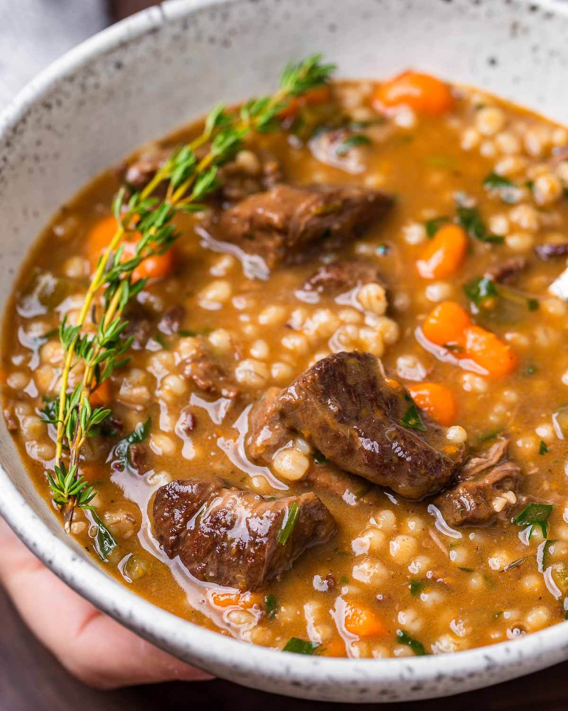

Beef and Barley Soup

Tender chunks of beef, a hearty helping of pot barley, and root veggies for days.. what's not to love? One of the few meals where the next-day leftovers taste even better.
Ingredients
- 1 package stewing beef
- 1 cup pot barley
- 1.5L beef stock
- 2 medium carrots, peeled/chopped
- 2 medium stalks celery, chopped
- 1 medium yellow onion, chopped
- 5 cloves garlic, peeled/minced
- 1/2 cup chopped button mushrooms
- 2 bay leaves
- 2 tbsp rosemary (fresh is best, dry will do)
- 2 tbsp thyme (ditto)
- 1 large chunk butter (about 3-4 tbsp)
- salt and black pepper to taste
Steps
- Preheat a large (at least 1 gal) soup pot, add 1 large chunk of butter and chopped onion. Add 1 tsp of salt and saute until translucent, taking care not to burn the onions.
- Add celery and carrot, saute for 2-3 minutes.
- Add meat and season with black pepper, saute until meat browned slightly.
- Add minced garlic and stock, bring to boil.
- Add rosemary, thyme, bay leaves, barley, and boil 10-15 minutes until barley is softened and becomes plump.
- Add mushrooms and boil 2-3 minutes.
- Serve in a bowl with slices of fresh bread for dipping.
Home